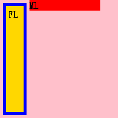
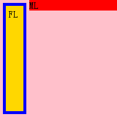
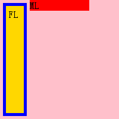
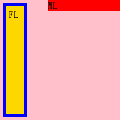
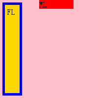

普通流中块级非替换元素包含块的计算公式如下：
'margin-left' + 'border-left-width' + 'padding-left' + 'width' + 'padding-right' + 'border-right-width' + 'margin-right' = width of containing block
'width' 计算规则中有如下一条：
如果 'width' 值为 'auto'，其他任何特性的 'auto' 值将被视为0，'width' 的实际值由公式计算得出。
关于 'margin' 特性的介绍，请参考 CSS 2.1 8.3 Margin properties: 'margin-top', 'margin-right', 'margin-bottom', 'margin-left', and 'margin' 。
关于普通流中块级非替换元素包含块的计算介绍，请参考 CSS 2.1 10.3.3 Block-level, non-replaced elements in normal flow 。
关于浮动的详细信息，请参 CSS 2.1 9.5 Floats。
在 WebKit 内核的浏览器中，当元素满足三个条件时，宽度计算不符合规范：
当元素符合上述三个条件时，WebKit 内核浏览器布局与其他浏览器布局不一致。
| Chrome Safari |
|---|
分析以下代码：
<div id="A" style="width:200px; height:200px; background:pink;"> <div id="FL"
style="width:20px; height:170px; padding:5px; border:5px solid blue; margin: 5px; float:left;
background:gold;">FL</div> <div id="ML" style="overflow:hidden; margin-left:80px;
background:red;">ML</div> </div>在 CSS 2.1 规范中，根据普通流中块级非替换元素包含块的计算公式：ML 的宽度等于包含块的宽度减 'margin-left' 值，所以 ML 的宽度应该是120px。 再将 'margin-left' 修改为50px，则 ML 的宽度应该是150px。这里 'margin-left' 是30px时有一点特殊，按上面公式计算 ML 的宽度应该是170px， 但是由于 ML 设置了 'overflow:hidden' 创建了 Block Formatting Context (以下简称 BFC)，创建了 BFC 的元素与浮动元素不可重叠。 浏览器重新给 'margin-left' 赋值，该值为能保证创建了 BFC 的元素与浮动元素不重叠的最小值，在本例中该最小值为50px，所以最终 ML 的宽度为150px。
注：关于 'margin-left:30px' 时，ML 的宽度是150px的得出过程为推测。
在各浏览器中效果如下：
| margin-left | IE Firefox Opera | ML的宽度 | Chrome Safari | ML的宽度 |
|---|---|---|---|---|
| 30px | 150px |  | 120px | |
| 50px |  | 150px |  | 100px |
| 80px |  | 120px |  | 70px |
可见：
根据上面代码，可得出：
注：上述代码中 Chrome Safari 中计算 ML 的 'margin-left' 临界值是左浮动元素的 margin box 的宽度。当有多个左浮动元素时，临界值为多个左浮动元素的 margin box 的宽度之和。
1、为该创建了 BFC 的元素设置一个明确的宽度。
2、如果 'margin' 值不小于浮动元素的 margin box 的宽时，去掉 'overflow:hidden'。
| 操作系统版本: | Windows 7 Ultimate build 7600 |
|---|---|
| 浏览器版本: |
IE6
IE7 IE8 Firefox 3.6 Opera 10.60 Chrome 4.0.302.3 dev Safari 4.0.4 |
| 测试页面: | RB5002.html |
| 本文更新时间: | 2010-07-27 |
width float overflow Block Formatting Context margin-left margin-right 浮动 行框